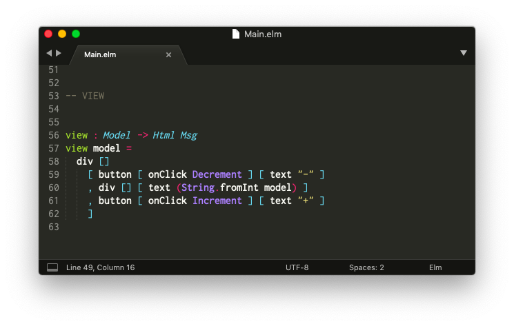

Instalar un editor de código
El primer paso es configurar un editor de código para que pueda interpretar archivos Elm.

Hay extensiones para varios editores, mantenidas por miembros de la comunidad. Aquí una lista incompleta:
Puede ser un poco complicado configurar un editor, así que para propósitos de esta guía te voy a explicar cómo configurar Sublime Text en particular. Idealmente será de ayuda para gente que recién empieza a programar, o como segunda opción para gente que ya tenga un editor de su preferencia.
Sublime Text
Paso 1: Descarga Sublime Text desde aquí.
Paso 2: Instala la extensión “Elm Syntax Highlighting”.
Después de completar esos pasos, al abrir archivos Elm los verás con coloreado de sintaxis, es decir, verás palabras claves como import y type en un color distinto, lo que hace que el código sea más fácil de leer.
Nota: ¡Recuerda que hay otras alternativas! Revisa la lista más arriba y busca la que se ajuste mejor a tu configuración personal. Y si acaso no la encontraste en la lista, haz una búsqueda para tu editor preferido; puede que encuentres algo a tu medida.